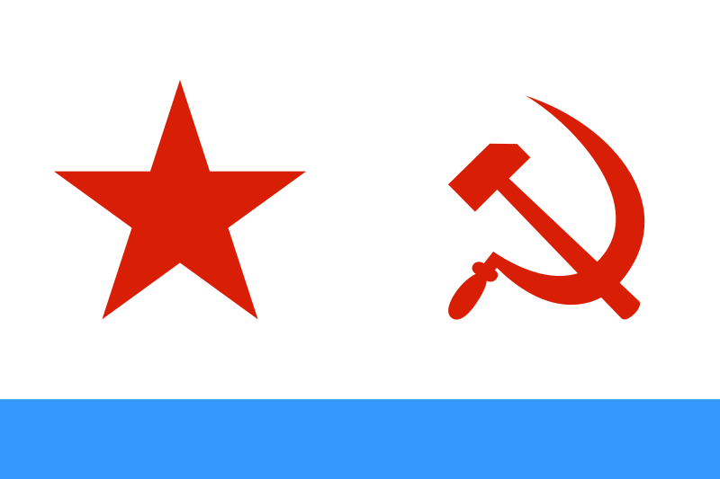
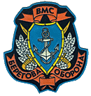
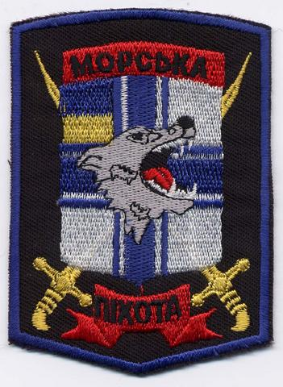

| Тип |
Бортовой номер |
Наименование |
В составе флота |
Состояние |
Примечания |
| Крейсера — (+1) |
| Ракетный крейсер проекта 1164 «Атлант» |
|
«Україна» |
Заложен на ССЗ «Имени 61-го коммунара» (г. Николаев) в 1984 г.
Спущен на воду 11.08.1990 г.
С 01.09.1993 г. в собственности Украины.
17.02.1998 г. официально принято решение о достройке.
|
Формально в составе ВМС Украины. В состоянии 95-ти %-ой готовности находится у достроечной стенки Николаевского ССЗ.
В последние несколько лет неоднократно поднимался вопрос о списании корабля или о продаже его России.
|
Ex. 
«Комсомолец», Ex. «Адмирал Флота Лобов»
|
| Фрегаты — 1 |
| Пограничный сторожевой корабльпроекта 1135.1 «Нерей» |
U130 |
«Гетьман Сагайдачний» |
05.10.90 заложен на ССЗ «Залив» (г. Керчь)для МЧПВ КГБ СССР.
Спущен на воду 29.03.92.
В июне 1992 г. перешел в собственность ВМСУ, переклассифицирован в фрегат и переименован, вступил в строй4 июня1993 года
|
В строю. Флагман ВМСУ |
Ех. .
«Киров»
|
| Корветы (противолодочные и ударные) — 4 (2) |
| Малый противолодочный корабль проекта 1124-М «Альбатрос»[3] |
U200 |
«Луцьк» |
Заложен 26.12.1992 на ССЗ «Ленинская кузня» (г. Киев)
Спущен на воду 22.05.1993 г.
Вступил в строй 30 декабря 1993 года
|
В строю.
Базируется на Донузлав.
|
|
| Малый противолодочный корабль проекта 1124-М «Альбатрос» |
U209 |
«Тернопіль» |
Заложен на ССЗ «Ленинская Кузня» 23.04.1991 г.
Спущен на воду 15.03.2002 г.
Вступил в строй 15 февраля 2006 года
|
В строю.
Один из самых «ходовых» кораблей ВМСУ.
|
|
| Пограничный сторожевой корабль проекта 1124П
(вариант Малого противолодочного корабля проекта 1124-М «Альбатрос»)
|
U206 |
«Вінниця» |
Заложен на Зеленодольском ССЗ 23.12.1975 для МПЧ КГБ СССР
Спущен на воду 12.09.1976 г.
Вступил в строй 31.12.1976 г.
В июне 1992 г. передан ВМС Украины переклассифицирован в корвет и переименован
|
В строю.
Базируется на Донузлав.
|
Ех.
«Днепр»
|
| Малый противолодочный корабль проекта 1241.2 «Молния-2»
(вариант БРК проекта 1241 «Молния» )
|
U208 |
«Хмельницкий» |
Заложен 20.10.1983 на Ярославском ССЗ.
Спущен на воду 26.01.1985.
Вступил в строй 09.09.1985 и 12.11.1985 включен в состав КЧФ.
01.08.1997 передан ВМС Украины, переклассифицирован в корвет и переименован
|
Выведен в резерв |
Ех.
«МПК-116»,
|
| Большой ракетный катер пр. 12411Т |
U155 |
«Придніпров’я» |
Заложен 21.04. 1981 г. на Средне-Невском ССЗ.
Спущен на воду 18.12.1982 г.
Вступил в строй 30.12.1983 г.
В 1997 году передан Украине переклассифицирован в ракетный корвет и переименован.
|
В строю |
Ех.
«Краснодарский Комсомолец», Ех."Р-54"
Ex.  «Никополь» «Никополь»
|
| Большой ракетный катер пр. 12411Т |
U156 |
«Кременчуг» |
|
Выведен в отстой в ожидании капитального ремонта. |
|
| Минно-тральные корабли — 5 |
| Морской тральщик проекта 266М «Аквамарин» |
U310 |
«Чернігів>» |
Заложен на Средне-Невском ССЗ.
Вступил в строй в 1974 г.
В 1997 году передан Украине.
|
Базируется на Донузлав. |
Ех.
«Зенитчик» до 1997 г. Ex. «Жовті Води» до 2004 г.
|
| Морской тральщик проекта 266М «Аквамарин» |
U311 |
«Черкаси» |
Заложен на Средне-Невском ССЗ (г. Ленинграде)
Вступил в строй в 1976 г.
05.08.1997 г. передан Украине
|
Базируется на Донузлав. |
Ех.
«Разведчик»
|
| Базовый тральщик проекта 1265 |
U330 |
«Мелітополь» |
Заложен на Петрозаводском ССЗ «Авангард».
Вступил в строй в 1979 г.
10.01.1996 г. передан Украине
|
В строю.
Базируется на Донузлав.
|
Ех.
«Одесский Комсомолец»
Ех. «БТ-79»
|
| Базовый тральщик проекта 1265 |
U331 |
«Маріуполь» |
Заложен на Петрозаводском ССЗ «Авангард».
Вступил в строй в 1978 г.
10.01.1996 г. передан Украине
|
В строю |
Ех.
«Оренбургский Комсомолец»
Ех. «БТ-126»
|
| Рейдовый тральщик проекта 1258 «Корунд» |
U360 |
«Генічеськ» |
|
В строю.
Базируется на Одесса.
|
|
| Ракетные катера — 2 |
| Ракетный катер пр. 206МР |
U153 |
«Прилуки» |
|
В строю |
Ех.
«Р-262»
|
| Ракетный катер пр. 206МР |
U154 |
«Каховка» |
Заложен на Невском заводе (г. Ленинград)
Вступил в строй в 1980 г.
30.12.1995 г. передан Украине
|
В строю.
По н.д. имеются проблемы с силовой установкой.
|
Ех.
«Комсомолец Татарии»
|
| Артиллерийские катера — 1 |
| Катер проекта 1400М «Гриф» |
U120 |
«Скадовськ» |
|
В строю.
Базируется на Очаков.
Предназначен для обеспечения действий спецподразделений на море.
Используется 73-м. центром морских спецопераций
|
|
| Десантные корабли — 2 (1) |
| Средний десантный корабль проекта 773 |
U401 |
«Кіровоград» |
Заложен 21.04.1970 г. на Полночной верфи (г. Гданьск Польша)
Спущен на воду 31.12.1970 г. 31.05.1971 г. вошел в состав ВМФ
С 10.01.1996 г.-в составе ВМСУ
|
В строю |
Ех.
«СДК-137»
|
| Большой десантный корабль проекта 775 |
U402 |
«Костянтин Ольшанський» |
Заложен на Полночной верфи (г. Гданьск Польша)
Вступил в строй в 1985 году.
С 27.03.1996 года входит в состав ВМСУ
|
В строю
Один из самых «ходовых» кораблей ВМСУ.
|
|
| Малый десантный корабль на воздушной подушке типа «Зубр» (проект 1232.2) |
U420 |
«Донецьк» |
Заложен на ССЗ «Море» (г. Феодосия)
Вступил в строй 26.06.1993 г.
|
С 2001 года находится на отстое в Феодосии.
По н.д. была попытка продать корабль Греции, но заказчик не принял его в виду технического состояния.
23. 07. 2008 г. распоряжением Кабинета Министров Украины N999-р исключен из состава ВМСУ и переведен в разряд технического имущества.
|
|
| Корабли управления — 1 (1) |
|
|
|
|
|
|
| Корабль управления проекта 1288.4 |
U510 |
«Славутич» |
Заложен в 1990 г.на Николаевской судоверфи на основе проекта большого морозильного рыболовного траулера (БМРТ).
Спущен на воду в 1992 г.
Построен и вошел в состав ВМСУ как корабль управления.
Первый и единственный корабль такого класса специальной постройки за всю советскую и пост-советскую историю.
|
В строю.
Один из самых «ходовых» кораблей ВМСУ
|
Ех.
ССВ-189 «Приднепровье»
|
| Плавучая мастерская пр.304 |
U500 |
«Донбасс» |
Заложен на Щецинской ферфи (Польша)
Вступил в строй в 1970 г.
В 1997 году был передан ВМС Украины и переименован. Впоследствии, перестроен в корабль управления переклассифицирован и переименован.
|
В резерве. |
Ex. «Краснодон» |
| Подводные лодки — (1) |
| Подводная лодка проекта 641 |
«Запоріжжя» |
Заложена на Ново-Адмиралтейском заводе (г. Ленинград) 24.03.1970
Спущена на воду 29.05.1970 Вступила в строй ВМФ 06.11.1970
В 1997 г. передана Украине.
|
С 1997 г на капитальном ремонте и модернизации на заводе «Металлист» (г. Балаклава).
В 2003 г. переведена на судоремонтный завод № 13 КЧФ РФ.
Де-факто, формально в составе ВМСУ. Находится в полуразобранном состоянии, последний выход в море датируется еще 1993 г.
Неоднократно поднимался вопрос о списании лодки, продаже в третьи страны или перестройки корабля в музей.
Тем не менее на начало 2009 г. ремонтные работы активизировались, корабль прошел доковый ремонт. В данный момент проводится монтаж батарей и подготовка к испытаниям.
|
Ех.
«Б-435»
|
и другие плав.единицы.
Готовятся к вводу в строй ещё 2 Бе-12. В составе ВМС также фигурирует как минимум 1 Ан-2, но входит ли он в состав бригады — не ясно, его использует 73-й центр морских спецопераций.
— 8 вертолётов (?? Ми-14, 2 (?) Ка-27, ?? Ка-29 ТБ, ?? Ми-8Т (?)).
В их числе 1 Ка-27ПС, который находится на борту фрегата «Гетьман Сагайдачный».
| Обозначение формирования или части |
Вооружение и оснащение |
Место расположения |
|  36-я отдельная механизированная бригада береговой обороны |
На вооружении (по открытым данным):
— 39 танков Т-64БВ,
— до 178 ББМ
— до 66 артустановок различных калибров.
|
Штаб — с. Перевальное.
Батальон МП — в Феодосии
|
|  1-й батальон морской пехоты |
40 БТР-80
— 8 минометов 2С12
— до 8 ПУ ПТУР
— до 8 ПУ ПЗРК «Игла»
— стрелковое оружие
|
Феодосия |
| 84-й батальон Береговой обороны |
|
|
| 127-й батальон Береговой обороны |
|
|
| Береговой стационарный ракетный дивизион «Объект 100» |
ПКРК «Утёс» с 4 ПУ (две сдвоенные установки)
ПКР 3М44 «Прогресс».
Боезапас дивизиона — 16 ракет.
Дальность стрельбы — 200 км, б/ч −1000 кг
|
Гончарное, возле Балаклавы |
| 25-ый береговой мобильный ракетный дивизион |
2 ПКРК «Рубеж» — 4 (две сдвоенных) ПУ
ПКР П-15М «Термит-Р»
2 ТЗУ с 4 ракетами.
Боезапас дивизиона — 8 ракет
Дальность стрельбы −80 км б\ч.- 513 кг.
|
7-й километр |
73 морской центр специальных операций 73 МЦСпО , г. Очаков Николаевская обл. 801 отряд ПДСС, г. Севастополь